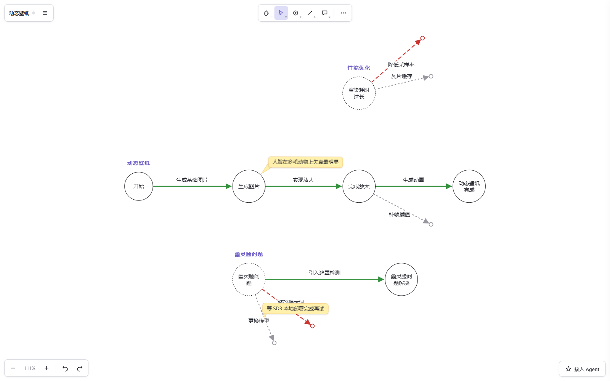

给你和你的Agent配个行车记录仪
人机共享的探索地图:人看画布,Agent 读 map.json

画布实拍:绿实线走通、红虚线证伪、灰点线待验证,便签挂在节点与方案上
一分钟接入你的项目
给用 Codex、Kimi Code、Claude Code 等 AI 编程助手的人。接入后,Agent 每次会话开始先读地图,主动汇报:当前进展、等你判断的方案、停滞的路线。
1复制接入协议
协议告诉 Agent:map.json 怎么读、什么时候汇报全局、干活后怎么同步、什么不许碰。
也可以手动打开 agent-kit/AGENTS.snippet.md,全文复制。
2贴给你的 Agent
在你的项目目录里,对 Agent 说一句:
它自己会完成配置。已有的记录文件也不用扔——对它说「初始化活点地图」,它会读你的记录生成地图草稿,你在画布上审核。
3连上项目文件夹
打开画布,菜单里选「打开项目文件夹」。画布改动自动存进 map.json;Agent 改了,画布两秒内自己刷新。
打开画布文件夹直连需要 Chrome 或 Edge;不行就导出 map.json 交给 Agent,一样能用。
画布上能干什么
状态属于方案线,不属于节点;探索允许失败、回退、悬空。
建节点 · 拉方案线
N 建节点,L 从节点拉出方案线。绿实线走通、红虚线证伪、灰点线待验证——切状态只改颜色,不动连接。
便签标注 · 评分归档
黄便签挂在节点与方案线上记结论;结果打分 0–100;归档只弱化、不删除,历史永远翻得回来。
与 Agent 共享一张图
画布和 Agent 读写同一个 map.json。你改完它接着用;它改完,画布两秒自刷新。
本地优先
地图数据和 Markdown 都在你自己的项目目录里。离线可用,不要账号,不要云数据库。
Codex、Kimi Code、Claude Code 等 Agent 通过项目文件读写同一张地图。不同 Agent,同一份记忆。
判断权永远在人:评分你打、归档你确认、画布上随便改,Agent 下次读到的就是你的版本。